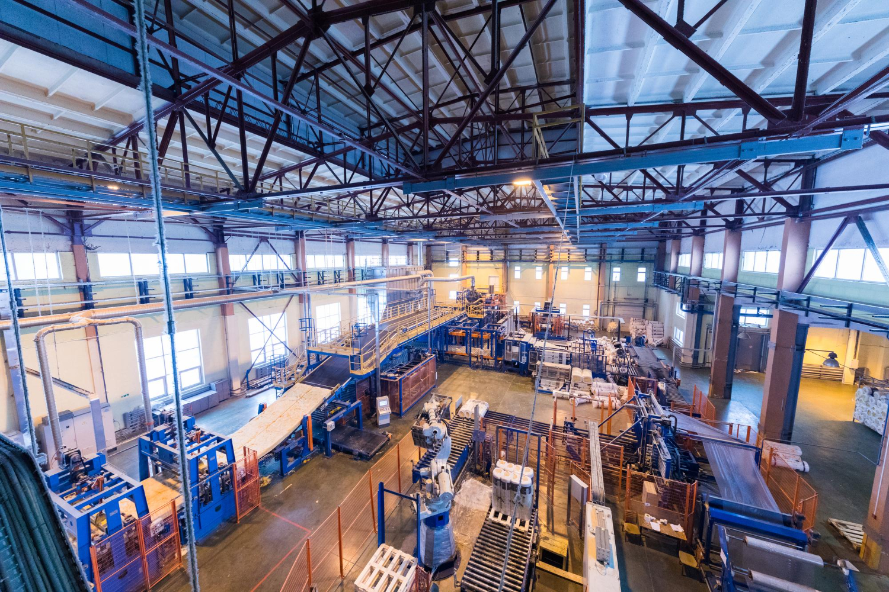

Industry is the driving force behind economic progress, offering employment, improving livelihoods, and increasing productivity. However, traditional industries have often contributed to environmental degradation. By embracing sustainable and responsible industrial practices, we can achieve economic growth without harming the planet.
Why Sustainable Industry Matters:
- Economic Growth: Industrialization has historically lifted millions out of poverty by providing stable employment and boosting economies.
- Job Creation: Manufacturing and related industries generate millions of direct and indirect jobs worldwide.
- Technological Advancements: Industries drive innovation, leading to new technologies and solutions for societal challenges.
- Environmental Responsibility: Sustainable production methods help reduce carbon footprints, water waste, and pollution.
Challenges to Industrial Growth:
- Unequal Industrial Development: Some developing countries struggle with outdated industries, lack of access to financing, and technological gaps.
- Environmental Impact: Industries contribute significantly to greenhouse gas emissions if not managed responsibly.
- Supply Chain Disruptions: Global economic shocks, such as pandemics or conflicts, can disrupt industries, affecting millions of jobs.
Solutions & Future Directions:
- Green Industry Practices: Investing in renewable energy, recycling, and sustainable raw materials.
- Industry 4.0: Utilizing automation, AI, and data analytics to optimize industrial processes.
- Inclusive Industrialization: Ensuring fair access to industrial development, especially in least developed countries (LDCs).
Did you know?
- Industrialization contributes 23% of global employment, proving its significance in shaping the economy.
- The manufacturing sector accounts for 16% of global GDP, playing a vital role in economic development.
